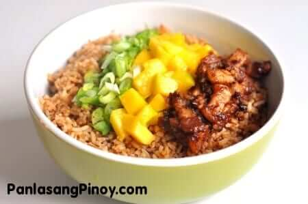

Bagoong Fried Rice

Description
Bagoong Rice is a type of fried rice dish that makes use of shrimp paste or bagoong.
This original version of this dish is of Thai origin.
However, and since we love bagoong, I made a real quick and easy version of the recipe that everyone can enjoy.
Making your own bagong rice can be hassle free as long as you have all the ingredients.
You can use commercially bottled shrimp paste that are already cooked, or you can cook your shrimp paste by following our bagoong guisado recipe.
As for the rice, left over steamed rice will work best.
Ingredients
- 1/4 lb pork belly, sliced thin
- 3 tbsp chopped scallions
- 1/2 cup green mango, chopped
- 5 cups steamed white rice
- 3 tbsp bagoong guisado
- 1 tsp garlic, minced
- 1 tbsp cooking oil
Directions
- Heat frying pan
- Sear pork on pan and cook out oil. 2-5 minutes
- Add 1 tbsp bagoong and stir for 1 minute. Remove from pan and set aside
- Pour oil ins ame frying pan
- When oil is hot, cook garlic for 15 seconds
- Add 2 tbsp bagoong and cook for 30 seconds on medium heat
- Put in rice. Mix while cooking until all are distributed evenly. 10 minutes.
- Transfer rice to serving bowl. Top with pork belly, green mango, and scallions.
- Serve.